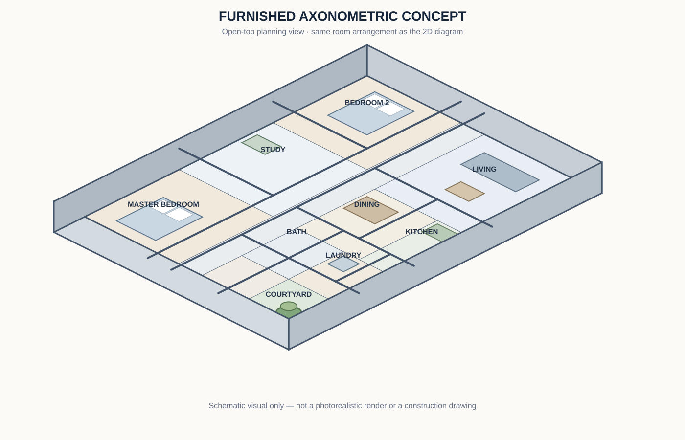
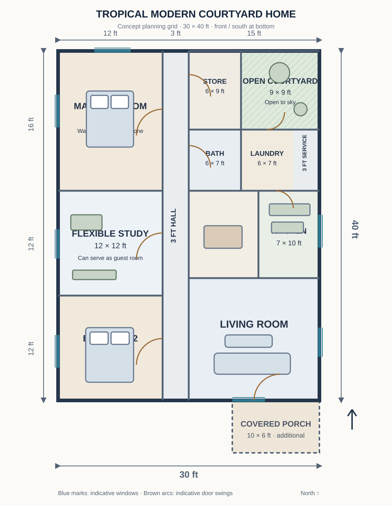
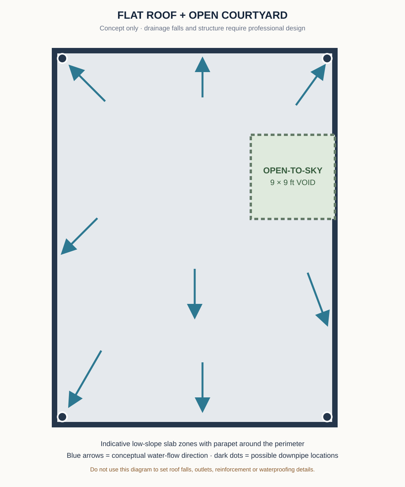

MODERN HOMES · DESIGN CONCEPT
30 × 40-Foot Tropical Modern Courtyard Home with a Flexible Study
A two-bedroom family home concept with a separate study or guest room, an open living area, a compact kitchen, a planted courtyard and a low-profile flat-roof design.

1. Design idea and who it may suit
This tropical modern concept is organised around a small open-to-sky courtyard rather than relying only on a large front window. The courtyard is intended to bring daylight into the rear service zone and create a green view from nearby rooms. A simple rectangular planning grid keeps the main form understandable, while the flat-roof silhouette, shaded porch and restrained exterior finishes give the home a contemporary appearance.
The layout includes a main bedroom, a second bedroom and a flexible study. The study can be used as a home office, hobby room or occasional guest room, subject to the furniture selected. The shared living room, dining space and kitchen are arranged as connected everyday spaces. A compact bathroom, laundry, store and service passage are grouped toward the rear to make the plumbing and maintenance zones easier to coordinate.
The concept may suit a household that needs a quiet work area and a small outdoor courtyard but does not need a third permanent bedroom. It is not a universal solution: plot orientation, neighbouring buildings, privacy, rainfall, access and local planning rules may require a different arrangement.
2. Conceptual 2D floor plan

The main planning grid is 30 feet wide by 40 feet deep, with the front entrance at the south side. A 10 × 6-foot covered porch is shown as an additional projection outside the grid. The room arrangement places the private rooms along one side, with a 3-foot-wide hall separating them from the shared living zone. The courtyard sits at the rear and is open to the sky.
| Space | Nominal planning size | Design purpose |
|---|---|---|
| Main bedroom | 12 × 16 ft | Sleeping and wardrobe zone |
| Bedroom 2 | 12 × 12 ft | Second bedroom for a family member or guest |
| Flexible study | 12 × 12 ft | Home office, hobby room or occasional guest room |
| Hall | 3 ft nominal width | Separate route to the private rooms and service spaces |
| Living room | 15 × 14 ft | Main seating and family gathering area |
| Dining area | 8 × 10 ft | Compact table for everyday meals |
| Kitchen | 7 × 10 ft | Single-wall or carefully planned galley kitchen |
| Bathroom | 6 × 7 ft | Shared shower, toilet and washbasin zone |
| Laundry | 6 × 7 ft | Washer, utility sink and cleaning storage |
| Store | 6 × 9 ft | Household and seasonal storage |
| Open courtyard | 9 × 9 ft | Daylight, planting and a small outdoor pause |
| Covered front porch | 10 × 6 ft | Shaded entrance; additional to the main grid |
The room modules are shown to communicate the intended proportions and adjacency. In a measured drawing, the designer must resolve wall thicknesses, columns, door frames, service ducts and the exact outside dimensions. The open courtyard is not enclosed floor area, so the 1,200-square-foot grid should not be described as 1,200 square feet of usable indoor space.
3. Bedroom and study planning
Main bedroom
The main bedroom is placed at the quieter rear end of the private wing. A double or queen-size bed can be positioned with its headboard against an internal wall, leaving the external wall available for a window. A built-in wardrobe can run along the wall closest to the hall, but its depth and door type must be checked against the bedroom entrance and bed clearances. Avoid placing tall storage where it blocks the window or the path to the bed.
Bedroom 2
The second bedroom is closer to the front of the private wing. A double bed, single bed or bunk arrangement can be selected according to the occupant. Draw the actual bed, wardrobe and bedside furniture to scale before confirming the final room size. Keep the window accessible for cleaning and ensure the bedroom door can open without hitting the furniture.
Flexible study or guest room
The middle room can accommodate a desk, task chair, closed storage and a sofa bed or daybed. If it is used as a permanent bedroom, its ventilation, privacy and access should be checked in the same way as the other sleeping rooms. If it is mainly an office, place the desk near daylight while controlling screen glare and providing enough sockets for the intended equipment.
4. Living, dining and kitchen arrangement
The 15 × 14-foot living zone is the main shared space. A three-seat sofa can face a media wall, with a compact coffee table and one occasional chair. Keep the route from the porch to the hall open; do not use the main circulation line as overflow furniture storage. A rug can define the seating group without adding a physical divider.
The dining area sits between the living room and kitchen. A four-seat table is a sensible starting point for the illustrated footprint. Check the pulled-out chair position, the route to the kitchen and the clearance around any sideboard before choosing the table size. A wall-mounted shelf or shallow cabinet may provide storage without narrowing the passage.
The 7 × 10-foot kitchen is compact. A single-wall or short galley arrangement is more realistic than a large island. Put the refrigerator, sink, preparation counter and cooktop in an order that suits the user's cooking habits. Keep the sink and cooktop away from door swings, and confirm appliance ventilation and manufacturer clearances before cabinetry is made.
5. Bathroom, laundry and courtyard
The bathroom is placed near the hall for access from both bedrooms and the study. The 6 × 7-foot label is a planning target only. The final layout must show the exact toilet, basin, shower area, door swing, floor trap and waterproofing zones. Because the concept does not show a direct external bathroom window, the designer should resolve an appropriate natural or mechanical ventilation route and confirm that it meets local requirements.
The laundry is beside the kitchen and courtyard. This creates a practical service zone for washing, drying and storing cleaning supplies. Provide a safe location for the washer, a utility sink if required, a floor drain and a route for drying clothes that does not obstruct the courtyard or kitchen. Keep access panels and plumbing connections reachable for maintenance.
The 9 × 9-foot courtyard is an open-to-sky outdoor room. A small tree or planter, permeable paving and a simple bench can make it useful without overcrowding it. Consider rainwater entry, drainage, privacy from neighbouring windows, mosquito control and safe access. The courtyard must not be treated as a substitute for required room ventilation unless the final design and local rules allow it.
6. Doors, windows and natural ventilation
- Main entrance: The front door opens from the covered porch into the living room. Check the door swing against the sofa and the main route to the hall.
- Bedroom and study doors: These open from the 3-foot planning hall. The final drawing should confirm the clear hall width after finishes and wall thicknesses are considered.
- Bathroom door: It opens from the hall. Choose a swing or sliding arrangement only after checking privacy, accessibility and local requirements.
- Kitchen and laundry: Keep the connection between the kitchen, laundry and courtyard practical without placing a door where it blocks the worktop or appliances.
- Windows: The concept indicates windows on the external bedroom walls, a front opening to the living room and an external kitchen opening. The final window schedule must specify width, height, sill level, opening type, glazing and privacy treatment.
Cross-ventilation depends on the actual wind direction, surrounding buildings, security and the size and location of openings. Do not assume that a pair of windows will create effective airflow on every site. Review sun angles, rain exposure, neighbouring privacy and shading before finalising the elevations.
7. Front, side and rear exterior concepts
The proposed exterior language is deliberately simple: a low-profile roofline, a shaded front porch, light-coloured walls, dark window frames and one restrained timber-look or textured accent. The front elevation can use a recessed entry and a vertical screen to soften direct views into the living room. The side elevations should remain calm and functional, with correctly placed windows and visible rainwater goods. At the rear, the courtyard-facing doors and service access should be coordinated so that the outdoor space feels intentional rather than leftover.

Suggested exterior image prompts
Front elevation prompt
Side elevation prompt
Rear elevation prompt
8. Flat-roof concept and roof drainage

A flat-roof appearance can be achieved with a properly designed low-slope roof build-up behind a parapet. The courtyard remains open to the sky, so its edges need careful weather detailing. The roof design must resolve positive falls, outlets, overflow provisions, parapet waterproofing, movement joints, access for maintenance and safe discharge of rainwater.
The roof diagram does not specify slab thickness, reinforcement, beam sizes, structural spans, waterproofing products or drainage capacity. These are not decorative choices. A qualified structural engineer and roofing/waterproofing professional must design them for the actual building, rainfall, wind exposure, soil and local requirements. Do not build a flat roof from the concept image alone.
9. Interior atmosphere and finishes
For the shared rooms, a restrained palette of warm white, pale stone, natural wood tones and muted green can make the courtyard feel connected to the interior. Use durable, easy-to-clean flooring in the living and dining areas. In the kitchen, select worktops and cabinet finishes based on moisture, heat, cleaning and maintenance needs. In bedrooms, use softer lighting and closed storage to keep the room visually calm.


Interior image prompt
10. Electrical and plumbing planning
Electrical planning should start with the furniture and appliance schedule. Mark ceiling lights, task lighting, switches near each entrance, bedside outlets, study desk outlets, television and internet points, kitchen appliance circuits, laundry connections and external lighting. Circuit design, protective devices, earthing, cable sizing and installation must be handled by a qualified electrician under the rules that apply at the site.
The kitchen, bathroom and laundry are grouped toward the service side of the concept, which may help organise pipe routes. A plumber should confirm water supply, hot-water requirements, waste and soil pipe routes, ventilation, inspection access, floor falls and rainwater connections. Test concealed plumbing and bathroom waterproofing before closing walls or installing final finishes. Never cut structural members to make room for pipes or cables.
11. Construction stages from site to finish
- Site review: Survey boundaries, levels, access, existing services, soil conditions, drainage and neighbouring openings. Confirm orientation and local setbacks.
- Measured design: Convert the concept grid into scaled architectural drawings with wall thicknesses, clear room dimensions, openings, furniture, courtyard levels and roof details.
- Professional coordination: Obtain structural, electrical, plumbing and regulatory input. Resolve the foundation system and roof design for the actual site.
- Setting out and foundation: Set out only from approved dimensions, then complete excavation and foundation work to the engineer's specification.
- Walls and structural frame: Build the walls and structural elements to the coordinated drawings, keeping openings and service routes in their approved positions.
- Roof and weather protection: Construct the designed roof system, parapets, outlets, waterproofing and rainwater discharge details. Protect the courtyard opening from uncontrolled water entry.
- First-fix services: Install electrical conduits, plumbing, drainage and ventilation provisions before plastering or closing ceilings.
- Finishes and fittings: Complete waterproofing tests, plaster, ceilings, floors, windows, doors, kitchen cabinetry, bathroom fittings and painting.
- Testing and handover: Test electrical safety, water supply, drainage, roof drainage, doors, windows and ventilation. Correct defects before occupation.
12. Materials and approximate cost planning
This concept assumes a single-storey home, a simple rectangular form, standard-to-mid-range finishes, no garage and no major retaining wall. It does not include land, financing, boundary walls, major landscaping or unusual site works. The 30 × 40-foot planning grid is 1,200 square feet (about 111.5 m²), but it includes the 9 × 9-foot open courtyard; the covered porch adds about 60 square feet (5.6 m²) if built outside the grid. Neither figure is a verified billable floor area.
There is no responsible universal construction price for this concept. Rates vary by country, city, date, soil, labour, transport, structural system, roof specification, finish level and contractor scope. For a first-pass local budget, use this method only after a measured plan is prepared:
- Confirm the measured enclosed and covered floor areas separately.
- Multiply each area by a current local rate for the chosen finish level.
- Add site preparation, foundations, drainage, utility connections and external works as separate line items.
- Include structural and professional fees, approvals, testing, transport and a contingency allowance.
- Ask at least three contractors to price the same drawings and written material schedule, and compare exclusions as well as totals.
| Cost group | Items to include in the estimate |
|---|---|
| Ground and structure | Survey, excavation, foundation, concrete, reinforcement, masonry and structural frame |
| Roof and weatherproofing | Roof structure, slab or covering, parapets, waterproofing, outlets, gutters and downpipes |
| Openings and finishes | Windows, doors, glazing, plaster, paint, flooring, ceilings and hardware |
| Services | Electrical installation, lighting, water supply, drainage, ventilation and bathroom fittings |
| Interior fit-out | Kitchen cabinets, worktop, storage, sanitaryware and selected appliances |
| External and professional | Drainage, paths, courtyard planting, approvals, professional fees, transport and contingency |
Any cost figure added later should state its currency, location, quotation date, finish level and inclusions. Treat online rates as a starting reference only, not as a contractor quote or a guaranteed final price.
13. What should be checked before using this concept?
- Confirm that the plot can accommodate the proposed footprint, porch, setbacks, access and drainage.
- Check whether the study needs to function as a permanent bedroom and adapt its openings and privacy accordingly.
- Verify all room dimensions after wall thicknesses and construction tolerances are added.
- Test furniture footprints, door swings, hall width and routes to the bathroom and kitchen.
- Resolve bathroom ventilation, courtyard drainage, roof falls, overflow routes and waterproofing.
- Have the foundation, structural frame, flat roof and all services designed for the actual site.
- Check local planning, fire, accessibility, energy and building requirements with the relevant qualified professionals.
14. Related DreamHome Plans guides
Continue planning with the House Plans collection, compare compact alternatives in Small Houses, explore cost-conscious ideas in Budget Houses, or refine individual spaces with Room Layout Ideas. The Garden Ideas collection can help develop the courtyard and outdoor planting concept.
Conclusion
This 30 × 40-foot tropical modern courtyard concept combines two bedrooms, a flexible study, an open shared living zone and a small planted outdoor space. Its main design idea is the relationship between the private wing, the shared rooms and the courtyard. The diagrams are useful for discussing proportions and priorities, but a measured, site-specific design must resolve the wall dimensions, structure, services, roof drainage and local approvals before construction.
DreamHome Plans — Plan Better. Build Smarter. Live Better.
← Back to Modern Homes